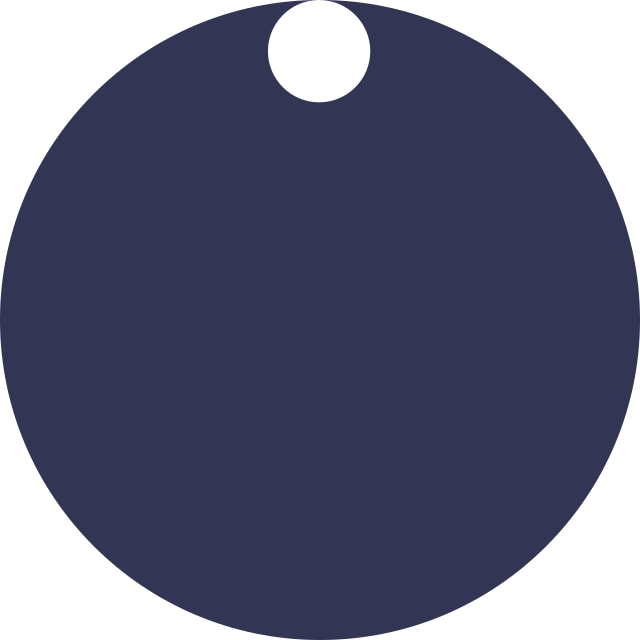

Aufgabe 1 - Rotierende Scheibe & Erweiterung 2 - Konstant rotierende Scheibe)
mit l (links) & r (rechts) kann die Scheibe um 15° gedreht werden
mit a (automatisch) kann eine konstante rechts Rotation gestartet und gestoppt werden

Erweiterung 1 - Anderes animiertes Objekt
von: gameart2d

Erweiterung 2 - Konstant rotierende Scheibe (Lösung in css)
